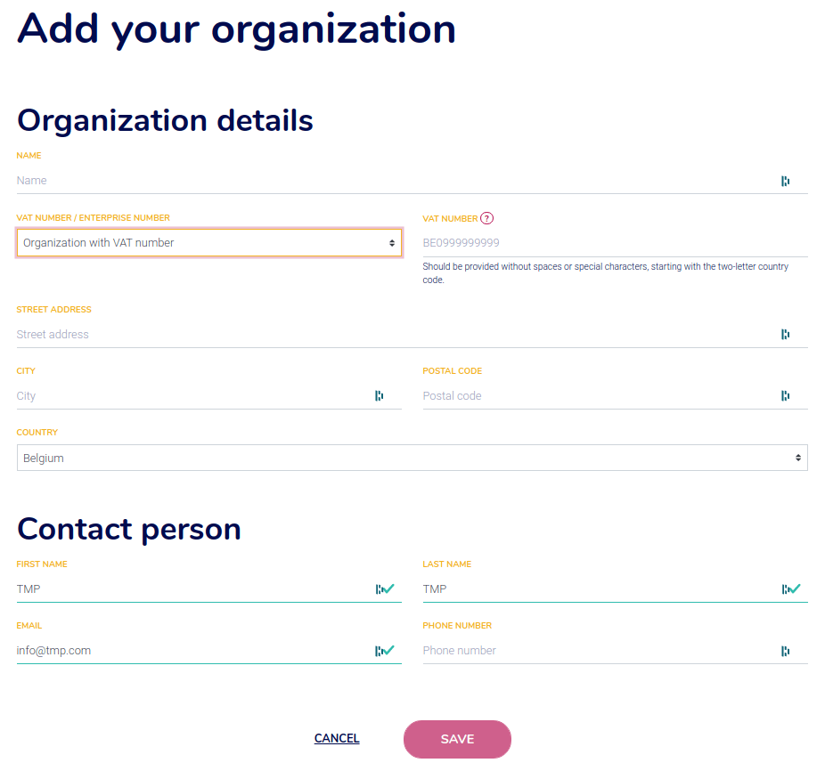
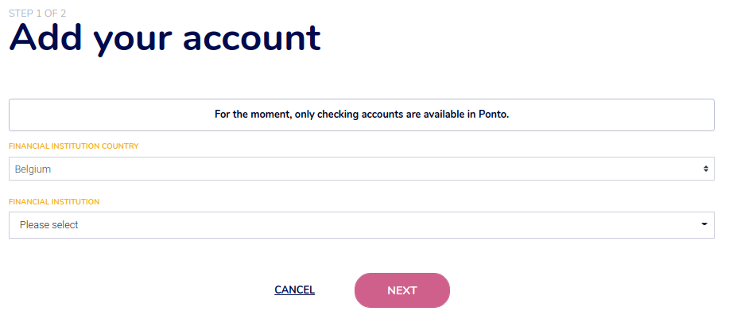
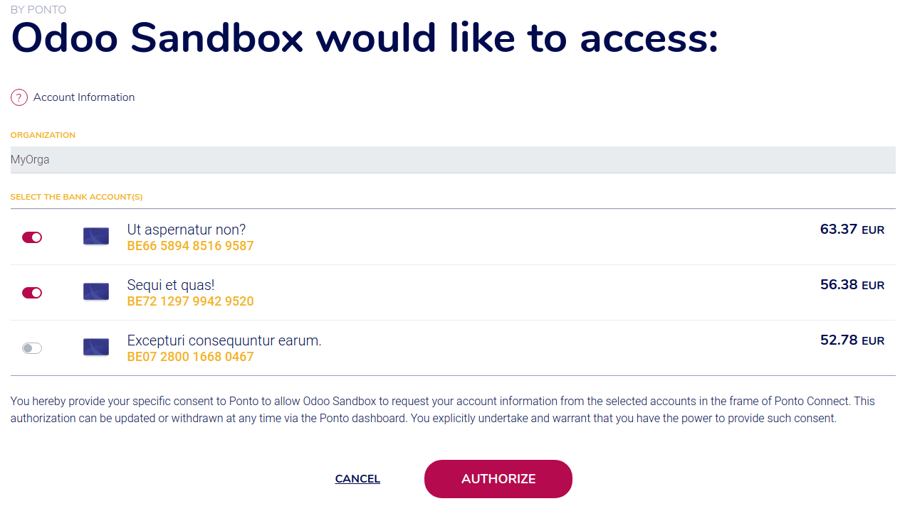

Ponto¶
Ponto is a service that allows companies and professionals to aggregate their accounts in one place and directly see all their transactions within one app. It is a third-party solution that is continuously expanding the number of bank institutions that can be synchronized with Odoo.
Odoo can synchronize directly with your bank to get all bank statements imported automatically into your database.
Ponto is a paid third-party provider that can handle the synchronization between your bank accounts and Odoo. Its pricing is 4€/month per account/integration.
See also
Configuration¶
Link your bank accounts with Ponto¶
Create an account if you don’t have one yet.
Once you are logged in, create an organization.
- Go to , and click on Add account.You might have to add your Billing Information first.
Select your country, your bank institutions, give your consent to Ponto, and follow the steps on-screen to link your bank account with your Ponto account.
Make sure to add all bank accounts you want to synchronize with your Odoo database before moving on to the next steps.
Link your Ponto account with your Odoo database¶
Go to .
Search your institution, make sure to select the right institution. By selecting the institution, you can verify that the third party provider is Ponto.
Click on Connect and follow the steps.
At some point, you will have to authorize the accounts you want to access in Odoo. Please select all the accounts you want to synchronize. Even the ones coming from other banking institutions.
Finish the flow.
Note
You have to authorize all the accounts you want to access in Odoo, but Odoo will filter the accounts based on the institution you selected in the second step.
Update your synchronization credentials¶
You might have to update your Ponto credentials or modify the synchronization settings.
To do so, go to and select the institution you want to fetch the other accounts. Click on Fetch Accounts button to start the flow.
During the update, select all the accounts you want to synchronize, even the ones coming from other banking institutions.
Fetch new accounts¶
You might want to add new online accounts to your connection.
To do so, go to and select the institution you want to fetch the other accounts. Click on Fetch Accounts button to start the flow.
Don’t forget to keep authorization for existing accounts (for all institutions that you have synchronized with Ponto).
FAQ¶
After my synchronization, no account appears¶
You selected an institution from the list and did not authorize any accounts from this institution.
I have some errors with my beta institution¶
Ponto provides institutions in beta, these institutions are not directly supported by Odoo and we advise you to contact Ponto directly.
Important
Using an institution in beta is beneficial for Ponto, it allows them to have real feedback on the connection with the institution.